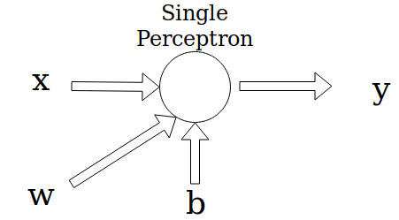
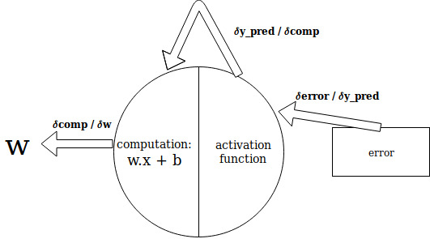

This is a post to explain the math behind perceptrons
- the most basic version of neural networks
Inspired by the human brain, perceptron is a very basic implementation of the artificial nueral networks. In this post, we are going to consider a classification example to try and understand the working of the perceptrons.
Assuming that the reader has the basic understanding of how machine learning works. The basic equation for the working of perceptron is as follows:
where, f(x) is the output function on the inputs of W, X and b.
X are the feature input.
W are the weights.
b is the bias added. It is used in cases where the input and/or weight is 0 but the output required is greater than 0. For example:
Note: Perceptrons are very similar to the linear regression/classification equation of y = m.x + c
Lets consider an example:

For the sake of simplicity, we shall consider sigmoid function as the activation function. Sigmoid activation function produces an output between 0 and 1 and is ideal for binary classification.
Any neural network architecture has two propogations:
- Forward propogation
- Backward propogation
The forward propogation is much simpler compared to the backward propogation. To explain both of them, let us consider the values of x, w and b. For now, we are assuming x and w to be singular values and not arrays of values. Let x = 0.2, w = 0.5, b = 1 and y = 1
Note: In regular practices, weights i.e, w values are randomly initialised to start with. Setting w to 0 hampers the progress of the NNs. Therefore, in this example as well, we are randomly assuming the values of w to be 0.5
Starting with forward propogation:
Now, activation function:
y = 1 while ypred = 0.750260105. Now, we need to calculate the loss of this model inorder to fix the value of w so that we get a more accurate prediction. Again for the purpose of simplicity, we use the square error or squared deviation to calculate the loss here.
Now, backward propogation:
Here, we have to make use of some calculus to generate partial derivatives.
By simple chain rule, we get:

Let's calculate each individual derivative:
The derivative of logistic function or sigmoid can be found here.
After we calculate the deviation of w, we need to fix the value of w using:
Where, α is the learning rate of the perceptron. In this case, we assume α = 0.1 for a slow learning pace. Then, w would be:
With the new updated weight, if we do a forward propogation, we get:
As you can see, the error has decreased by 0.000035026
Final results and conclusion:
After 10 such backpropogations, we get error = 0.058421439134552285. After 100, we get error = 0.05541710835895062. After 1000, we get error = 0.035670439401619874, w = 2.2881284935495714 and ypred = 0.8398025077881307.
When learning rate is increased to 0.5, after 1000 iterations, we get error = 0.013857968380475365, w = 5.073454174765683 and ypred = 0.8822801275039963
When learning rate is 0.9 and after 1000 iterations, we get error = 0.008078951704099424, ypred = 0.9101170110415802 and w = 6.577969372118709